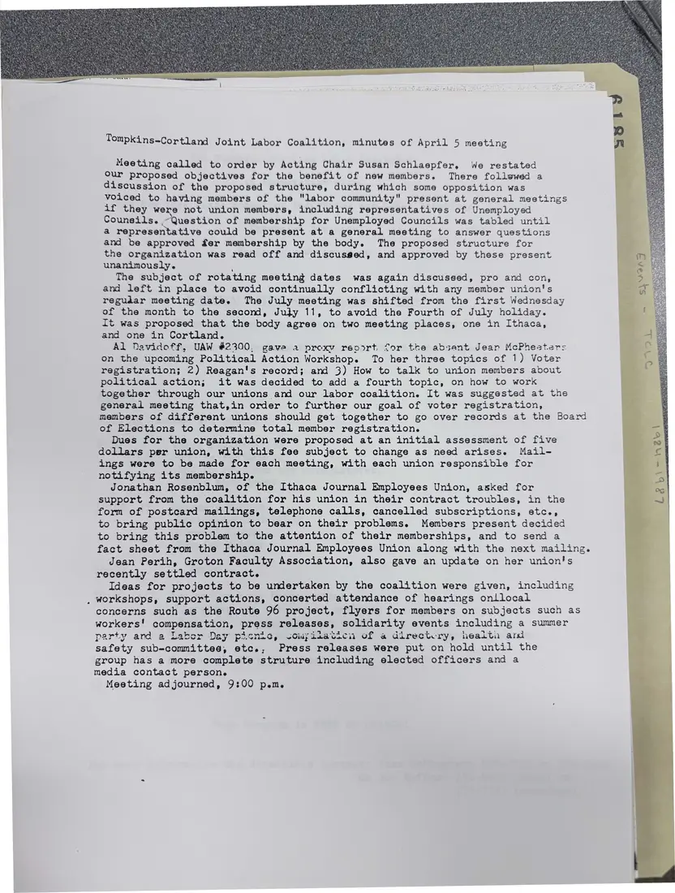

Minutes, 1 page
Minutes of the April 5 meeting, Tompkins-Cortland Joint Labor Coalition
April 5, [1984]Date inferred
Acting chair Susan Schlaepfer restates the coalition's objectives, members debate whether non-union members of the labor community such as the Unemployed Councils can join, and the proposed structure is approved. The minutes also cover meeting dates and plans for a political action workshop.
The year is inferred from the neighboring 1984 agendas and minutes.
Download or cite this itemPages


(open zoom view)Read the page text (machine-read, mostly readable)
This text was generated automatically from the photograph and has not been corrected. The image is the authoritative record.
Tompkins-Cortland Joint Labor Coalition, minutes of April 5 meeting Meeting called to order by Acting Chair Susan Schlaepfer, We restated Our proposed objectives for the benefit of new members. There follwwed a discussion of the proposed structure, during which some opposition was voiced to having members of the "labor community" present if they were not union members, including representatives Counsils. ~Question of membership for Unemployed Councils a representative could be present at a general meeting to and be approved fer membership by the body. The proposed the organization was read off and discusged, and approved unanimously. at general meetings of Unemployed was tabled until answer questions structure for by these present The subject of rotating meeting dates was again discussed, pro and con, and left in place to avoid continually conflicting with any member union's regudar meeting date. The July meeting was shifted from the first Wednesday of the month to the second, Ju}ty 11, to avoid the Fourth of July holiday. It was proposed that the body agree on two meeting places, one in Ithaca, and one in Cortland. Al Navidoff, UAW #2300, gave a prexy resort. for the absant Jear McPheeters on the upcoming Political Action Workshop. To her three topics of 1) Voter registration; 2) Reagan's record; and 3) How to talk to union members about political action; it was decided to add a fourth topic, on. how to work together through our unions and our labor coalition. It was suggested at the general meeting that,in order to further our goal of voter registration, members of different unions should get together to go over records at the Board of Elections to determine total member registration. Dues for the organization were proposed at an initial assessment of five dollars per union, with this fee subject to change as need arises. Mail- ings were to be made for each meeting, with each union responsible for notifying its membership. Jonathan Rosenblum, of the Ithaca Journal Employees Union, asked for support from the coalition for his union in their contract troubles, in the form of postcard mailings, telephone calls, cancelled subscriptions, etc., to bring public opinion to bear on their problems. Members present decided to bring this problem to the attention of their memberships, and to send a fact sheet from the Ithaca Journal Employees Union along with the next mailing. Jean Perih, Groton Faculty Association, also gave an update on her union!s recently settled contract. Ideas for projects to be undertaken by the coalition were given, including workshops, support actions, concerted attendance of hearings onllocal ‘ concerns such as the Route 96 project, flyers for members on subjects such as workers! compensation, press releases, solidarity events including a summer party and a Labor Day safety sub-committes, etc., picnic, sompilaticn of a directery, healta and Press releases were put on hold until the group has a more complete struture including elected officers and a media contact person. Meeting adjourned, 9:00 p.m.
See something wrong, or recognize a person or event? Send a correction. If you hold rights in this item or think it should not be public, write to the same address.